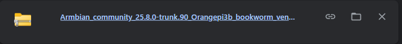
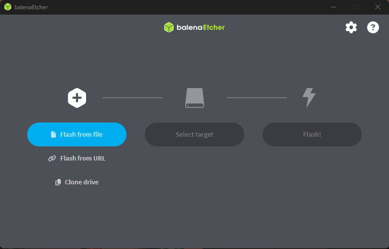
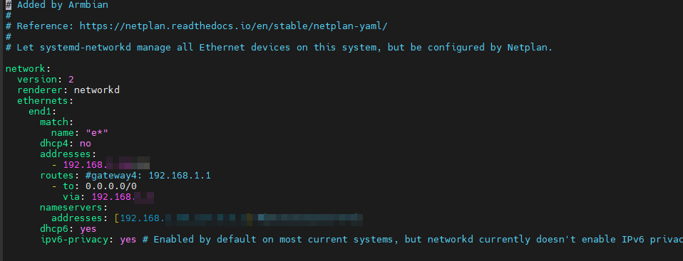
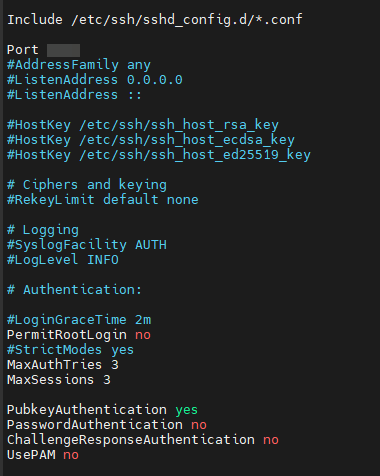

🟠 Primeros pasos
💾 Instalación de Armbian
- Descarga de Armbian
Ve a la página oficial de Armbian y descarga la imagen basada en Debian Bookworm para la Orange Pi 3B (v2.1).

- Grabación de la imagen
Utiliza una herramienta como Balena Etcher o Raspberry Pi Imager para grabar la imagen en una tarjeta microSD (recomendado mínimo 16GB, clase 10).

- Primer arranque
Inserta la microSD en la Orange Pi 3B y conéctala a la corriente. Espera a que el sistema arranque. El usuario por defecto suele serrootoarmbian, consulta la documentación de Armbian para confirmar.
🌐 Configuración de IP fija
-
Accede por consola o SSH
Si tienes acceso a un monitor y teclado, inicia sesión localmente. Si no, conecta la Orange Pi a la red y busca la IP asignada por DHCP en tu router. -
Edita la configuración de red
Abre el archivo de configuración de red con tu editor favorito, por ejemplo:
sh
sudo nano /etc/netplan/10-dhcp-all-interfaces.yaml
Añade o edita el contenido para asignar una IP fija (ajusta la IP según tu red):

Guarda y cierra el archivo.
- Reinicia la interfaz de red
sh
sudo netplan apply
🔐 Configuración de SSH
- Cambiar el puerto SSH a 2222
Edita el archivo de configuración SSH:
sh
sudo nano /etc/ssh/sshd_config
Busca la línea:
#Port 22
Y cámbiala por ejemplo:
Port 2222
- Deshabilitar acceso por contraseña
En el mismo archivo/etc/ssh/sshd_config, busca y modifica (o añade si no existen) las siguientes líneas:
PasswordAuthentication no
ChallengeResponseAuthentication no
UsePAM no
- Habilitar autenticación por clave pública
Verifica que esta línea esté presente y sin comentar:
PubkeyAuthentication yes

- Copiar tu clave pública al Orange Pi
Desde tu máquina cliente (donde tienes la clave privada), ejecuta:
sh
ssh-copy-id -p 2222 usuario@192.168.1.x
Si ssh-copy-id no funciona por el puerto personalizado, puedes hacerlo manualmente:
En tu máquina cliente:
sh
cat ~/.ssh/id_rsa.pub
Copia la salida.
En tu Orange Pi:
sh
mkdir -p ~/.ssh
nano ~/.ssh/authorized_keys
Pega la clave pública, guarda y cierra.
Asegúrate de que los permisos sean correctos:
sh
chmod 700 ~/.ssh
chmod 600 ~/.ssh/authorized_keys
- Reiniciar el servicio SSH para aplicar cambios
sh
sudo systemctl restart ssh
- Probar la conexión
Desde tu cliente, prueba:
sh
ssh -p 2222 usuario@192.168.1.x
Debería pedir solo la clave y no la contraseña.
Extra: Bloquear acceso SSH para root
En /etc/ssh/sshd_config:
PermitRootLogin no
✅ Con esto tenemos la Orange Pi 3B lista, con Armbian, IP fija y acceso remoto seguro por SSH.
💡 Ahora podremos empezar a configurarla desde nuestra oficina relajadamente sin tener que usar monitores ni periféricos de más 😉